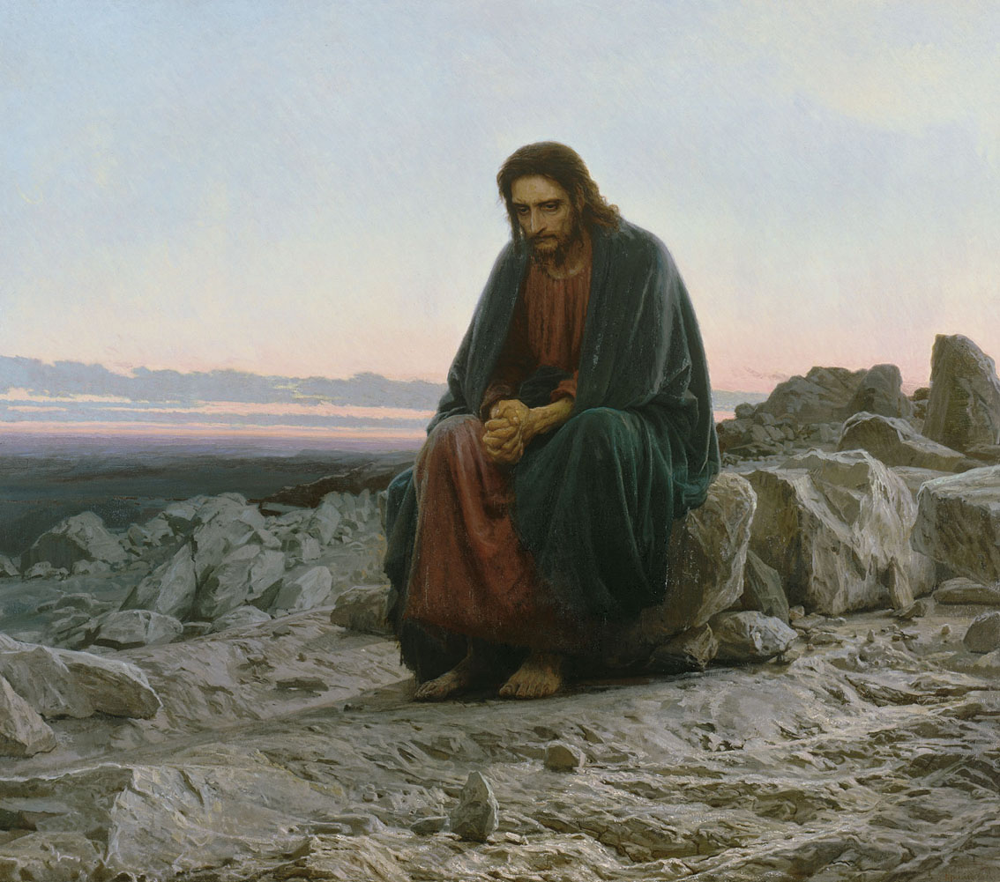
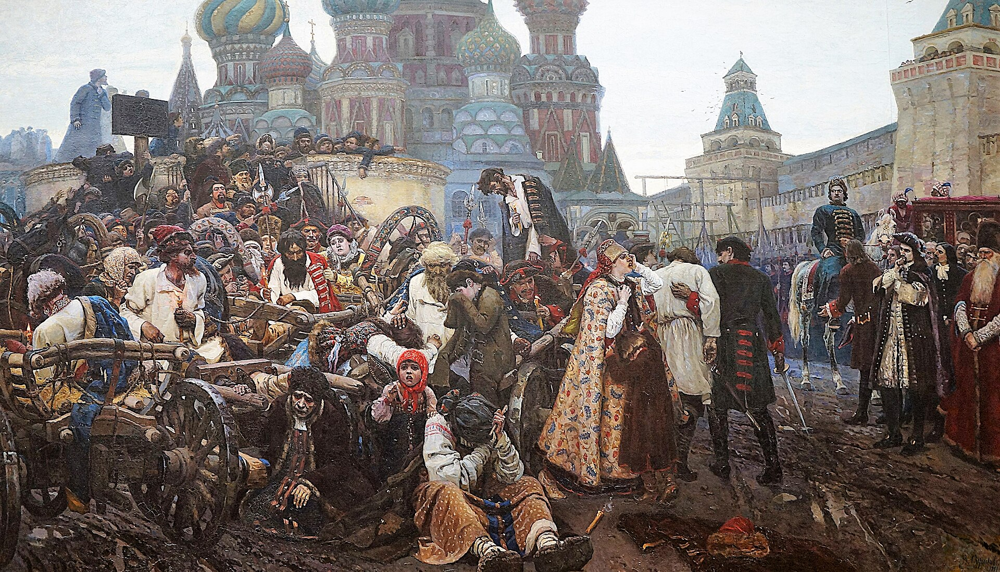

이전의 후원과 취향
살롱, 아카데미, 국가와 부유한 수집가들은 고전·신화·역사 장면, 매끈한 마감, 읽기 쉬운 도덕을 선호했다. 대형 화면은 공적 가치와 이상적 인체를 기념하는 형식이었다.
사실주의는 ‘있는 그대로’의 복사가 아니라, 누가 역사화의 주인공이 될 수 있는가를 다시 묻는 19세기 미술의 선택이다. 농민, 노동자, 지방의 장례, 도시의 대중교통을 신화와 영웅에 견줄 크기와 무게로 제시했다.
현실은 자연스럽게 보이는 것이 아니라, 무엇을 화면의 중심에 놓을지 결정할 때 비로소 정치적이고 미학적인 문제가 된다.
상세 학습
19세기 사실주의는 동시대의 노동, 계급, 농촌과 도시를 역사화에 견줄 규모와 진지함으로 다루려 한 태도다. 닮게 그리는 기술보다 무엇을 중요한 현실로 선택했는지가 핵심이다.
아카데미즘의 이상화된 역사·신화 주제를 현재의 구체적 삶으로 대체하고, 인상주의는 같은 현재를 빛과 순간적 지각의 문제로 다시 바꾼다.
흔한 오해: 사진처럼 정밀하면 사실주의라는 뜻이 아니다. 거친 붓질도 사실주의가 될 수 있으며, 작품은 현실을 그대로 복사하기보다 어떤 현실을 보이게 할지 선택한다.
1848년 혁명 전후의 프랑스에서 사실주의는 아카데미가 권위를 부여하던 신화·성서·고대 역사와 완결된 미를 비판적으로 상대화했다. 이는 아름다움을 거부한다는 뜻이 아니라, 농촌의 반복 노동과 도시의 계급 현실도 공적 회화가 다룰 만한 진실이라는 주장이다. 러시아에서는 검열과 제국의 불평등, 농노 해방 이후의 사회 변화 속에서 순회전람회와 결합해 더 윤리적이고 서사적인 현실 관찰로 발전했다.
살롱, 아카데미, 국가와 부유한 수집가들은 고전·신화·역사 장면, 매끈한 마감, 읽기 쉬운 도덕을 선호했다. 대형 화면은 공적 가치와 이상적 인체를 기념하는 형식이었다.
신문·풍자 판화·독립 전시, 중산층 도시 관객, 사회 개혁 담론이 성장했다. 사실주의 화가들은 같은 제도 안에서 출품하기도, 쿠르베처럼 독자 전시를 열기도 하며 현실의 주제를 위한 관객을 넓혔다.
사실주의는 낭만주의의 동시대성, 역사화의 크기, 강한 물질성을 물려받았다. 다만 비범한 재난과 영웅적 감정에서 물러나, 평범한 공동체와 계급의 일상을 정면으로 보려 했다.
프랑스와 유럽 여러 지역의 혁명은 시민권·노동·빈곤을 공적 논쟁으로 밀어 올렸다. 사실주의는 이 격변을 영웅 한 명보다 생활 속의 집단과 제도로 읽으려 했다.
쿠르베는 공식 전시에 거절된 작품들을 위해 별도 전시관을 열고 ‘리얼리즘’을 내세웠다. 제도가 정한 주제·심사·명예의 바깥에도 전시와 비평의 장을 만들 수 있음을 보여 준 사건이다.
농노 해방 뒤에도 빈곤과 불평등은 계속되었다. 젊은 화가들은 수도의 아카데미에만 머물지 않고 순회전람회를 조직해 더 넓은 관객과 사회 문제를 연결했다.
아카데미의 누드는 고전적 균형과 매끈한 표면으로 시간을 멈춘다. 쿠르베의 장례는 동시대 주민을 수평으로 늘어세워, 평범한 죽음과 공동체에도 공적 회화의 규모를 부여한다.
사실주의는 단일한 화풍이 아니었다. 프랑스에서는 농촌 노동과 도시 계급을 대형 회화·판화·풍자로 다루며 살롱의 위계를 흔들었다. 러시아에서는 순회전람회가 수도 밖 관객에게 작품을 가져가고, 개인의 표정과 제국 사회의 모순을 함께 읽는 공공적 서사를 만들었다.
밀레는 고개 숙인 노동의 반복을 무거운 형태로 응축한다. 레핀은 같은 노동을 서로 다른 얼굴과 자세를 지닌 사람들의 집단으로 보여 주어, 사회 구조와 개별 인간을 함께 보게 한다.
사실주의는 현대의 삶을 회화의 주제로 만들었지만, 다음 세대는 ‘무엇을 그릴까’에 더해 ‘어떻게 보이는가’를 물었다. 인상주의는 도시와 노동의 현재성을 버리지 않으면서도, 안정된 윤곽과 사회적 서사보다 변화하는 빛·대기·순간적 시각을 앞세웠다. 이는 단순한 단절보다, 사실주의가 연 현재를 다른 감각으로 확장한 전환이다.
계급·노동·지역 공동체를 역사화의 규모로 다루어, 전통적 주제의 위계를 흔들었다.
무거운 형태와 사회적 설명은 변화하는 도시의 속도, 시선, 빛의 불안정을 충분히 포착하지 못한다고 여겨졌다.
같은 현대 생활을 고정된 이야기보다 특정 시간의 색과 대기, 관람자의 시각 경험으로 조직했다.
쿠르베는 현실을 지속되는 사회적 관계와 물질의 무게로 제시한다. 모네는 현대 항구를 안개와 빛의 짧은 인상으로 바꾸며, 사실주의의 ‘현재’에 다른 관찰의 속도를 더한다.
아래 순서는 활동 국가가 아니라 학습의 출발점과 확장 순서다. 프랑스와 러시아의 차이는 화가의 후원·전시 제도·사회 조건을 이해하는 정보로 읽는다.
| 학습 단계 | 미술가와 분야 | 주요 활동 국가 | 고유의 특징 | 대표 작품과 연도 |
|---|---|---|---|---|
| 초심자 핵심 | 귀스타브 쿠르베 · 회화 | 프랑스 | 지방의 장례와 노동을 대형 역사화의 크기로 다루며, 두꺼운 물질감과 평평한 군상으로 주제의 위계를 뒤집었다. | 《오르낭의 매장》 · 1849–1850 |
| 초심자 핵심 | 일리야 레핀 · 회화 | 러시아 | 노동자와 시민을 유형이 아닌 각기 다른 표정의 개인으로 그려, 사회 비판과 심리적 관찰을 결합했다. | 《볼가강의 배 끄는 인부들》 · 1870–1873 |
| 학습 단계 | 미술가와 분야 | 주요 활동 국가 | 고유의 특징 | 대표 작품과 연도 |
|---|---|---|---|---|
| 중급 확장 | 장프랑수아 밀레 · 회화 | 프랑스 | 농민의 반복 노동을 단순하고 무거운 몸의 리듬으로 그려, 존엄과 피로를 동시에 드러냈다. | 《이삭 줍는 여인들》 · 1857 |
| 중급 확장 | 오노레 도미에 · 회화·판화 | 프랑스 | 풍자 판화의 압축된 선과 덩어리를 도시 생활에 적용해, 계급과 제도의 모순을 날카롭게 드러냈다. | 《삼등 열차》 · 1862–1864 |
| 중급 확장 | 이반 크람스코이 · 회화·전시 조직 | 러시아 | 종교·초상을 기적보다 인간의 내적 선택과 윤리적 갈등으로 바꾸고, 이동파의 전시 원칙 형성에 기여했다. | 《광야의 그리스도》 · 1872 |
| 중급 확장 | 바실리 수리코프 · 역사화 | 러시아 | 국가의 과거를 한 영웅의 서사가 아니라 광장에 모인 다양한 개인의 공포와 저항으로 재구성했다. | 《스트렐치 처형의 아침》 · 1881 |
대표 미술가 표의 순서와 동일하다. 카드를 열어 화면의 무엇이 ‘현실’을 주장하는지 다시 확인해 보세요.

선정 이유: 평범한 지방 장례를 역사화의 크기로 제시해, 사실주의의 주제 혁명을 가장 분명하게 보여 준다.
실제 마을 사람들이 화면을 가득 채우며 영웅적 중심을 거부한다. 낮은 수평과 흙빛의 물질감은 공동체의 삶과 죽음을 공적 현실로 만든다.

선정 이유: 사회 비판과 개별 인물의 초상성을 결합한 러시아 사실주의의 기준점이다.
줄에 묶인 인부는 익명의 군중이 아니라 서로 다른 연령과 표정을 가진 개인이다. 넓은 풍경은 노동의 고됨과 제국의 진보를 긴장시킨다.
선정 이유: 농민의 반복 노동을 역사화만큼 중요한 주제로 다룬다.
낮게 숙인 몸과 넓은 들판은 노동의 존엄을 감상적으로 꾸미지 않는다. 풍요로운 수확의 배경과 대비되어 분배의 현실이 보인다.
선정 이유: 도시 노동자와 대중교통의 계급 현실을 직접 다룬다.
좁은 객차의 지친 승객은 산업화된 도시의 이동과 빈곤을 한 덩어리로 느끼게 한다. 풍자화에서 익힌 압축은 사회 비판의 밀도를 높인다.

선정 이유: 종교적 인물을 동시대 인간의 윤리적 갈등으로 바꾼다.
황량한 풍경과 지친 자세는 기적보다 침묵과 선택을 강조한다. 사실주의가 외부 관찰뿐 아니라 심리적 진실도 추구했음을 보여 준다.

선정 이유: 역사적 사건을 다양한 민중의 감정으로 재구성한다.
광장의 군중은 국가 권력 앞에서 서로 다른 공포와 저항을 보인다. 역사화의 규모를 유지하면서도 개인의 심리적 현실을 전면에 놓는다.